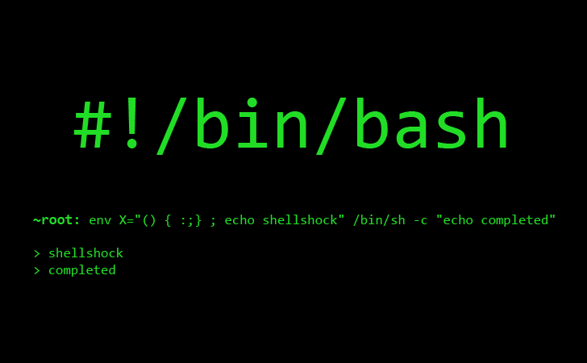

July - September 2022
This projects contains a geohash encoder and a geohash decoder. Geohash Encoder coverts a tuple of latitude and longitude to its corresponding geohash. This program converts a given latitude and longitude to an 8 characters long geohash, which has an error rate of ±19 meters. A geohash decoder converts a geohash into its corresponding tuple of latitude and longitude.


ChatGPT is a popular and fast growing artificial intelligence program that has the ability to to assist and converse with humans in natural language. With the growing number of users, there have been different responses to the AI, with some praising ChatGPT highly while others have raised criticism and concerns. The goal of this project is to use sentiment analysis to classify ChatGPT tweets as Positive, Negative, or Neutral from the timeframe November 2022 (when the software first launched) to January 2023.

The shell is a program where the user enters commands (usually by keyboard); these are parsed and executed. It's a shell that generally runs first in the Terminal application on both the Mac and Linux (and in the Windows PowerShell application). There are many different shell programs available, with bash being a very popular one. In this project, I am implementing several features of bash.

In the classic Twenty Questions game, one person thinks of something--anything--and other people try to guess the thing by asking yes or no questions to narrow down what sort of thing it is. If they guess it in fewer than 20 questions, they win. In this project, a person plays the 20 Questions game with the computer. In this version of the game, the human thinks of something and the computer will try to guess it.

Baato is a cloud based geospatial services for developers and businesses in Nepal. Baato R library makes it easy to integrate Baato API into existing projects.